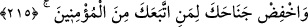

etmeyeceğinin, onlar hakkında şefâatinin kabul olunmayacağının bilinmesi içindir.
Çünkü îman asıldır, diğerleri ona tâbîdir. İşte bu sırdan dolayı Allah Teâlâ “(Önce) en
yakın akrabanı uyar.” âyetinin ardından şöyle buyurdu:
215. Sana uyan müminlere (merhamet) kanadını indir.
Onlara yumuşak davran, beraberlik ve sohbete devam et. Onlarda görülen bazı
hatâları görmezden gel, nâhoş hallerine tahammül et, iyi ve güzel ahlâkla davran,
onların hepsine katlan. Onlar sana vermese de sen ver. Eğer sana haksızlık ederlerse
onları bağışla. Benim hakkımda kusur ederlerse onları affet ve onlar için mağfiret dile.
Tevâzu ve şefkat sahibi ol; yani şefkati kazan ve cömert ol.
“ yükseltmenin zıddıdır. Yumuşak huyluluk, sükûnetle yürümek, yâni devenin
âheste gitmesi demektir. Bu ifade, yumuşak davranmaya ve hoş geçinmeye teşviktir.
Nitekim el-Müfredât’ta böyle geçmektedir.
Ordunun cenâhı iki yanı mânâsındadır. “Kanadını indir” ifâdesi, inmek istediği zaman
kuşun kanadını indirmesinden istiâredir. Yakın ve uzak insanlarla beraberlik sırasında
tevazu göstermek, yumuşak ve halîm olmak, kuşun aşağı inmek istediğinde kanatlarını
indirmesine benzetilmiştir.
Fâsık ve münâfığa gelince, bazı haller dışında ona kanadını indirme. Çünkü
yumuşaklık ve sertlikten her birinin Kuran’ın delâlet edip gösterdiği bir vakti vardır.
Her birine kendi vaktinde riâyet etmek gerekir.
et-Te’vîlâtü’n-Necmiyye’de der ki: “Buradaki nükte şudur: Allah Teâlâ: “Sana uyan
müminlere (merhamet) kanadını indir” buyurdu, mutlak olarak “müminlere
(merhamet) kanadını indir” buyurmadı. Fakat “sana uyan” ifâdesiyle bunu kayıtladı.
Çünkü her tâbi olan mü’mindir. Fakat her mü’min tâbi değildir. Bu, ancak ittibâ ile hâsıl
olacak îmânın hakîkatinden uzak bir mü’minin, imân iddiâsıyla aldanmaması içindir.”
Akıllı kimseye gereken, hayırlı kimselerle sohbeti/beraberliği tercih etmek,
amellerinde onlara uymak, onların ahlâkını ve hallerini elde etmeye çalışmaktır.
Yakınlığın şerefiyle on hayvan cennete girecektir. Onlardan birisi ashâb-ı kehfin
köpeğidir. Şâir ne güzel söylemiş:
Ashâb-ı Kehf ’in köpeği bir zaman
İyilerin peşinden gitti de er oldu
O, koç sûretinde onlarla beraber cennete girecektir.